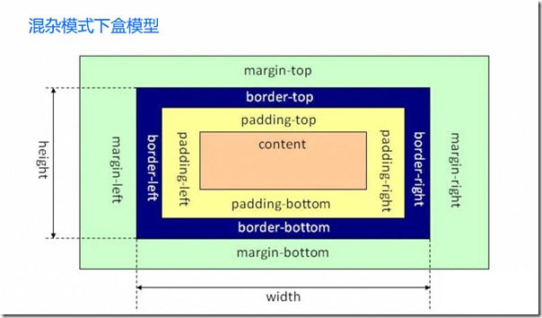

网站重构‘切页面’ && SeaJs 框架的使用
大纲
- 你会学到什么?
- CSS 定义，为什么要用CSS
- 盒子模型介绍
- 重构('切页面')流程的工作流程(从设计的PSD -> 完整的html实现)
- Seajs 介绍
- SeaJs 使用规范以及SeaJs模块开发
- 你不会学到什么?
- 浏览器的兼容处理
- CSS3的使用
- 前端开发的优化
- 具体SeaJS模块开发
网站重构
目的
- 用户体验 - 让用户更爽【速度】
- 提高网站可访问性【语义化】
- 降低成本
工具
- PhotoShop
- DreamWeaver，Notepad++，SublimeText...
- 主流浏览器
CSS 定义
- 层叠样式表（英语：Cascading Style Sheets，简写CSS），又称串样式列表，一种用来为结构化文档（如HTML文档或XML应用）添加样式（字体、间距和颜色等）的计算机语言，由W3C定义和维护。目前最新版本是CSS2.1，为W3C的推荐标准。CSS3现在已被大部分现代浏览器支持，而下一版的CSS4仍在开发过程中。
盒子模型
标准模式下盒子模型
当浏览器厂商开始创建与标准兼容的浏览器时，他们希望确保向后兼容性。为了实现这一点，他们创建了两种呈现模式：标准模式和混杂模式。在标准模式下浏览器按照规范呈现页面；在混杂模式下，页面以一种比较宽松的向后兼容的方式显示。混杂模式通常模拟老式浏览器的行为以防止老站点无法工作。

混杂模式下盒子模型
浏览器根据DOCTYPE（文档声明）是否存在以及使用那种DTD来选择要使用的呈现方式。如果XHTML和HTML文档保航形式完整的DOCTYPE，那么它一般以标准模式呈现。相反，如果文档的DOCTYPE不存在或者形式不正确则导致HTML和XHTML以混杂模式呈现。

重构流程
- 先结构，后表现，在行为。（通俗点就是先 HTML 构架，再 CSS 渲染，最后写入 Javascript）
- 先分析页面结构，将页面按上中下结构划分成不同模块，然后左右划分
- 结构，表现，行为分离

举例子
小结回顾
- 为什么要重构，CSS定义
- 盒子模型原理
- 重构流程以及需要使用到的工具
- 怎么重构，实例演示
SeaJs 框架的使用
Seajs 介绍
- A Module Loader for the Web
- CMD - Common Module Definition

- SeaJs官方文档
SeaJs 使用规范以及SeaJs模块开发
- 使用的API -> define，require，use
- define 定义一个seajs模块，define(id, [dependencies], factory) 、factory(require, exports, module)
- require seajs模块内部使用，同步获取文件
- use 异步加载JS文件，提供一个callback回调函数
SeaJs模块开发 SVN -> static9/pub
define('login', function(require) { var $ = require('jquery'), user = require('user'), cookie = require('cookie'); return { run : function(){} } });
- 页面中使用
- 头部定义seajs
- 底部配置模块版本号及seajs加载代码
- 页面模块中使用seajs.use('moduleId')
- Demo Page
小结回顾
- SeaJs 是什么，干什么用的
- 怎样写一个Seajs模块
- 页面中怎么使用SeaJs框架
感谢 && 提问环节
Notes
- 页面中ID不能重复，Class可以重复使用，实现重用
- 主流浏览器 - IE6-9(360, 搜狗等IE内核)，Chrome，FF等
- CSS选择符执行顺序从右向左
参考资料